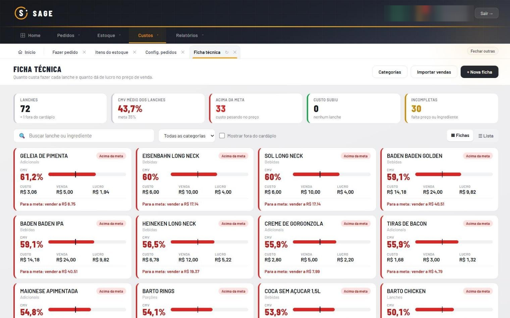

Em produção, com cliente ativo
S.A.G.E
ERP de pedidos, estoque e gestão
Sistema Administrativo de Gestão Empresarial, feito para restaurantes. No fechamento do dia, a equipe informa a sobra; o S.A.G.E calcula quanto pedir de cada item e envia o pedido para cada fornecedor pelo WhatsApp da própria empresa. Os relatórios saem em PDF no sistema ou direto no WhatsApp, para quem tem permissão de pedir.
“Isso aqui não é somente uma automação, é confiança: os dados estão seguros, é rápido e até uma criança consegue usar o sistema.”
Ver detalhes do projeto
- Pedido de compra automático pelo WhatsApp, com regra por item: tabela semanal, estoque mínimo e máximo ou receita por faixa de produção
- Estoque com recebimento, entradas, saídas, descartes e fechamento semanal ou mensal
- Gestão de custos: ficha técnica com custo, CMV e margem de cada lanche
- Relatórios JasperReports de pedidos, estoque e indicadores, emitidos no sistema ou pelo WhatsApp
- Multiempresa, com o ciclo todo feito por mim: modelagem, API REST, interface e infraestrutura
- Infraestrutura em VPS Linux: Docker Compose com reinício automático, back-end como serviço systemd que volta sozinho em menos de 1 minuto após reiniciar o servidor, Nginx com HTTPS, deploy por script, backup com pg_dump e credenciais fora do código